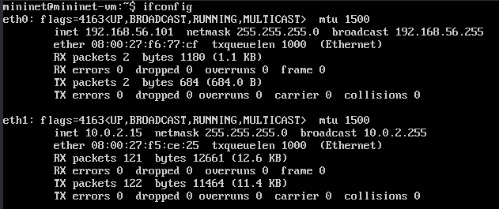
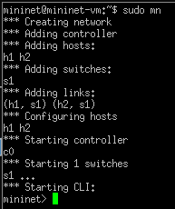
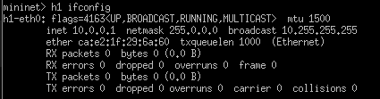
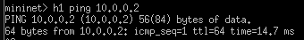

Российский университет дружбы народов, Москва,
Россия
18/11/2023
Цель работы
Основной целью работы является развёртывание в системе виртуализации
(например, в VirtualBox) mininet, знакомство с основными командами для
работы с Mininet через командную строку и через графический
интерфейс.
Настройка образа VirtualBox
Установить образ Mininet с офицального репозитория Github
(https://github.com/mininet/mininet/releases).
Запустить систему виртуализации VirtualBox и импортировать образ
машины (.OVF файл).
Добавить 2 сетевых интерфейса:
NAT
Host-only adapter и vboxnet0
Настройка образа VirtualBox
После настройки машины, запустить виртуальную машину.
machine
Подключение к виртуальной машине
Дефолтные учетные данные для авторизации:
login: mininet
password: mininet
Подключение к виртуальной машине
Для удаленного подключения будем использовать ssh:
ssh -Y mininet@192.168.x.y
ssh
Параметр -Y отвечает за перенаправление сессии X11.
Подключение к виртуальной машине
Для доступа по ключу также следует добавить ключ с хостового
устройства на виртуальную машину при помощи
ssh-copy-id.
ssh-copy-id mininet@192.168.x.y
Настройка доступа к Интернету
При помощи команды ifconfig можно узнать IP-адреса на
интерфейсах:

ifconfig
Настройка доступа к Интернету
Для того, чтобы виртуальная машина mininet использовала 2 адаптера
при запуске - надо добавить изменения в файл
/etc/netplan/01-netcfg.yaml.
/etc/netplan/01-netcfg.yaml
Обновление версии Mininet
Все файлы связанные с mininet лежат в открытом репозитории на
Github, откуда их можно скачать.
mininet
Обновление версии Mininet
В моем случае, установлена версия 2.3.1.
version
Работа с Mininet с помощью командной строки
Для запуска минимальной топологии нужно просто запустить mininet при
помощи команды mn.

mn cli
Работа с Mininet с помощью командной строки
Можно узнать нынешние узлы и связи можно при помощи следующих
команд:
net & nodes
Работа с Mininet с помощью командной строки
Можно запускать команды от имени определенной машины.

Запуск команд
Работа с Mininet с помощью командной строки
Для проверки связи между узлами, проведем ping от
h1 до h2

ping
Построение и эмуляция сети в Mininet с использованием графического
интерфейса
Также работать с mininet можно при помощи графического
редактора.
sudo ~/mininet/mininet/examples/miniedit.py
Построение и эмуляция сети в Mininet с использованием графического
интерфейса
Для проверки добавим два хоста и свитч, соединим их и пропишем
IP-адреса на устройствах. Далее проведем ping от
h1 до h2.
GUI ping
Построение и эмуляция сети в Mininet с использованием графического
интерфейса
Также можно в автоматическом порядке выдавать адреса, изменив
IP-base в топологии сети.
Auto IP
Выводы
По мере выполнения работы, я познакомился с mininet, развернул
базовую топологию как в CLI режиме, так и в GUI редакторе.